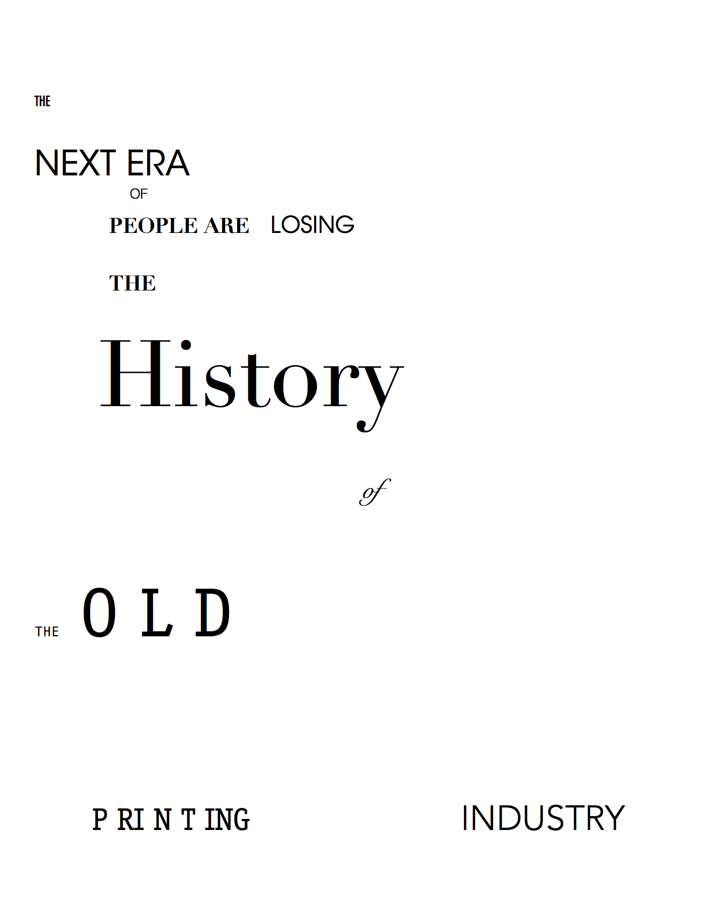

In creating my first piece, I made two copies, both very different.
This was my second piece I chose to stick with for the rest of the proejct. I used many variations of san serif type and serif type, placing each word in a left orientation on the page.
The next part was creating a post script version of the assignment

Coding in post script format was really different, but learning another way to create a text layout is really fascinating!
After creating our page in post script, we were assigned to create it in HTML format, and I struggled with this a little bit.
This portion of the project needs some touching up, and fixing, but it is almost finished.
Lastly, using InDesign to design my paper markup was much easier. It really makes you appreciate the programs that we currently have today for design use, because coding in pot script is a little bit harder than it seems to be.
This is my response I created using Adobe InDesign, and this out of the other 3 was the easiest to replicate my physical copy of my original response, because I didn't have to figure out the placement of each letter and type through coding. I just used the program the way it is mean to be used.